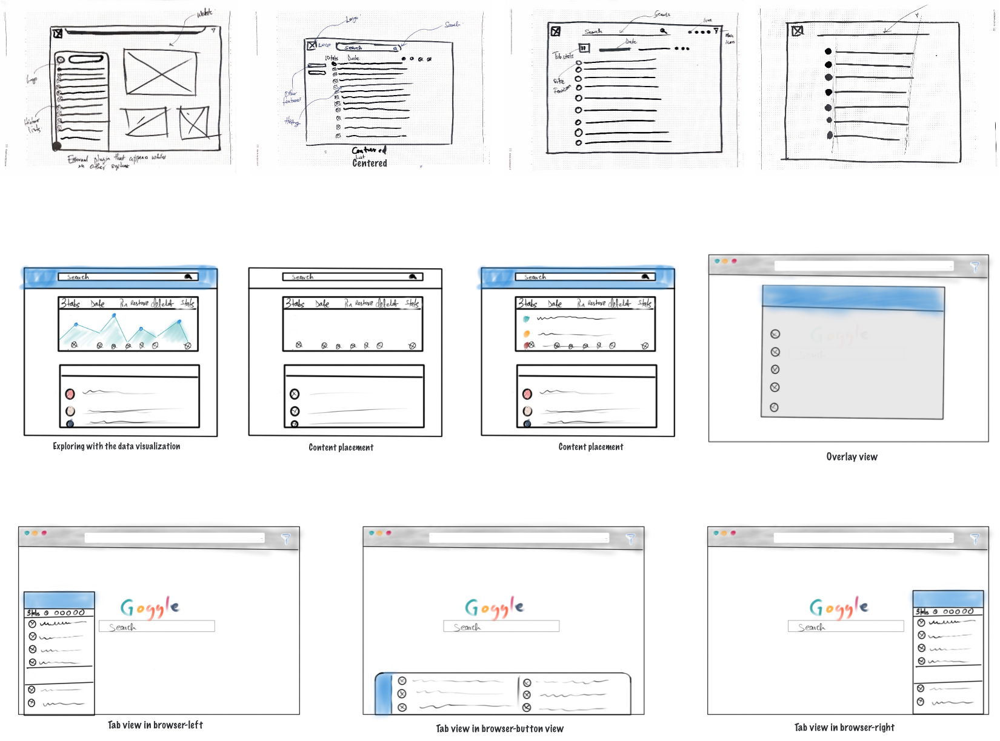
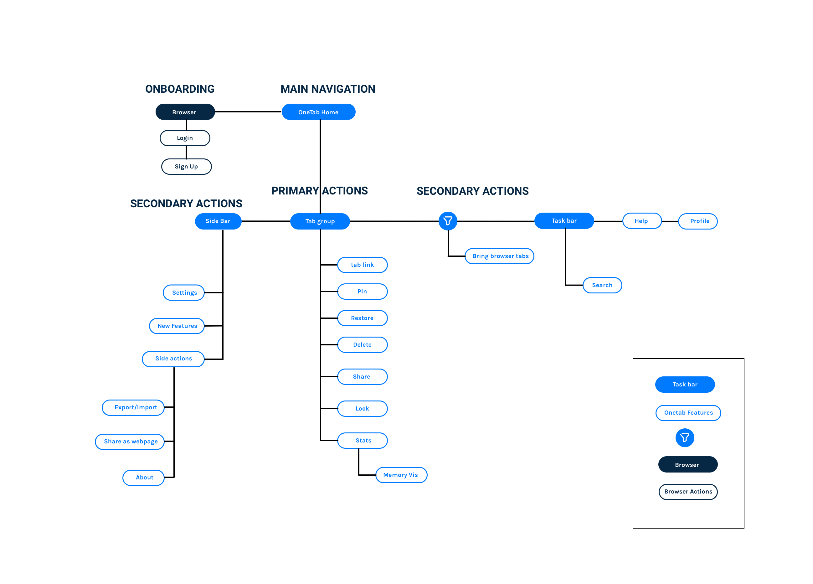

Overview
In this product redesign project, I conducted a critique of OneTab ( Chrome & Mozilla browser API) to suggest some possible solution as concepts.
Type
University projectRole
UI / UX- User experience
- Visual design
Design Brief
OneTab is a free browser API compatible with Google Chrome and Mozilla Firefox and, its main use is for managing multiple tabs. When browsing the internet users usually open up several browsers as they perform a regular task like, research information, chatting on multiple platforms and even play games along with other activities. Having these multiple tabs open primarily leads to drainage of CPU and memory for most users. With a click of a button, OneTab closes all the tabs and groups the link into one tab where users can access them from there. Though it has been an effective way of decluttering browser, the platform has several user experience issues that hinder a smooth experience.
Create a multi-device browser tab manager that is user-centered and reduces cognitive load for its users.
Solution
The new OneTab interface put search at the front for users. It gives a visualization for the RAM used for users to understand the trends in web usage. The interface leverages SaaS principles and user experience. The redesigned logo also help reinforce and convey the core brand value of decluttering and simplicity.
Success metric
The success measure of the platform revolves around how easy user can search for closed tabs and remember the position of the tab. It is also a measure of how easy users will get familiar with the components in the API.
Design Process
Market Research
I started this research by gaining a holistic understanding of the general browser market and to help me draw connected patterns of topics that could be relevant in the use of the APIs. I generally wanted to understand: Which browsers had the highest market share? The browser with the highest memory usage? People habits towards managing browser tabs.
Primary Research
After gaining a broad understanding of the subject matter, I had to learn more the target audience and also validate the insights gathered earlier by investigating how people manage their tabs and which browser was common amongst the people who badly managed their browsers. I conducted user interviews, online surveys and observed target users use the platform.
User Survey
To determine what exactly I needed to focus on with a target audience, I leveraged the insights gained from the market study to conduct a survey using Google Form Survey and gathered 43 responses from participants. I generally wanted to determine how the target audience managed the browser tabs.
Contextual Inquiry interview
Along with the survey I conducted contextual inquiry interviews with 8 students and a worker about the browser tab use, habits, and behaviors. The biggest takeaways I got from my research was:
Key Interview protocol
1. When do you use OneTab?
2. How many tabs do you have opened?
3. How do you monitor RAM used?
4. How do you recover links?
5. Ease with finding links?
6. What auxiliary tools do you use?
Participants
- Students & Workers
- Number of Participant: 9
- Gender: 6 male/ 3 female
Current Site review
Drawing on diverse design principles and usability standards like the Nielsen Heuristics, I conducted a review of the platform to identify the trends and patterns of issues to synthesize with the primary and secondary research to formulate a unified problem direction.
Search
With the ability to store thousands of browser history, Onetab fails with access to a search feature for users to easily identify old links. This renders users the inability to scroll down and identify very old fills. If users have a prominent search system that could be explored with name, date etc. that will make their lives easy and reinforce the goal of Onetab
Highlighting Core functions
The OneTab dashboard fails to highlight some of the core functionality that users would want on the main dashboard. The text and wording is also a lot for users to memories, cause memory load. Using an actionable and short 'call to action' buttons or iconography can help users perform the function of the dashboard.
Layout
The general layout of OneTab is pretty inconsistent and information needs to be broken up into digestible bits. Web links need to be centered along with search links.
Simplicity
Prominence is not given to the core functions of the service, though the text communicates the function, this could be improved by decluttering and simplifying it. By introducing familiar icons with hover text information could reduce the memory load and enhance learnability.
Brand Recognition
The product logo doesn't communicate or reflect the core values of the services. Simplifying the logo by moving from 3D to 2D would help align its core function to the brand.
Competitive Analysis
The difference in use and benefit from the web browsers history was the best benchmark for a closed tab or ended session search. OneTab, on the other hand, aims to save disk and memory space but also as a reference point for the closed file. This intersection between saving space and searching for closed information offered a good starting point in creating a unique platform for the users. Conducting the competitor analysis at this point gave me an overview of the strength and weakness of the other platforms compared to OneTab.
Key Problem Space identified
1. Difficulty in finding links
2. No means to monitor RAM use
3. Confusing Layout when too are many
4. Problems onboarding
Research Synthesis & Persona
Based on my entire research insights, I was able to model persona to truly depict the demands needed to be addressed in the ideation and design of a solution. I modeled the persona around the technologies used, behaviors, the pain points, and their general needs.

Initial Sketches
After synthesizing all the research findings I started by brainstorming several solutions and ideas based on all the key finding and the problem direction. I started this phase by doing some napkin sketches then progressed to digital sketches on the iPad. My focus was on the positioning of the tab content and the layout. Guirella testing: The sketches became my first option to test out my ideas- testing it on five colleagues to source for ideas and feedback through

Site Map
Whiles brainstorming, I developed the site map to visualize the information architecture of the platform. I was able to specify the primary and secondary functions whiles fleshing out all the key functions along with it.

User flow
I also mapped out the relevant user flows to reflect users actions and guide me in developing the screens. The flows were developed on common themes and scenarios found in the initial research phase.
Wireframing
Initial Testing
In other to understand the user group better conducted a guerilla testing based on my suggested solutions on five power users who had some problem with Onetab. Using a minimal pre-interview protocol, the goal for the testing was to further identify other pain points and to align the solution to a generalized user base.
- Most participants wished the wanted the menu at the top right be expanded by default
- Three of the participants validated the center-aligned search feature in the system
- One participant wanted icons but the other four recognized the icons at a first glance.
UI Kit & Style guide
I developed a style guide to help create UI consistency and uniformity in all part of the platform. This also gave the ease to accomplish a stronger user experience.
Solution & Final Deliverable


Reflection & Future work
This project is a culmination of several weeks of inquiry and intense journey of pushing myself to question my ideas and philosophies. Starting from minimal testing to near controlled testing with the target audience every part of this project pushed me to validate it before moving on. This process reemphasized my belief in continuously testing products with the little prototype or even sketch you make. I also learned how to better leverage my practical people skill coordinate testing sessions and user observations. Being an Empath, I was even more open to user criticism and feedback. I employed a lot of ideas and principles I learned from the NNGroup videos and documentation.
Key takeaway
Designers can help reduce user cognitive load by creating affordances with cues that help them recognize than recall features.
Designers should always limit users expectations in the early stage of testing by starting with low fidelity mockups that show the most important functions.
Designers should always test no matter how early they are in the product development stage.